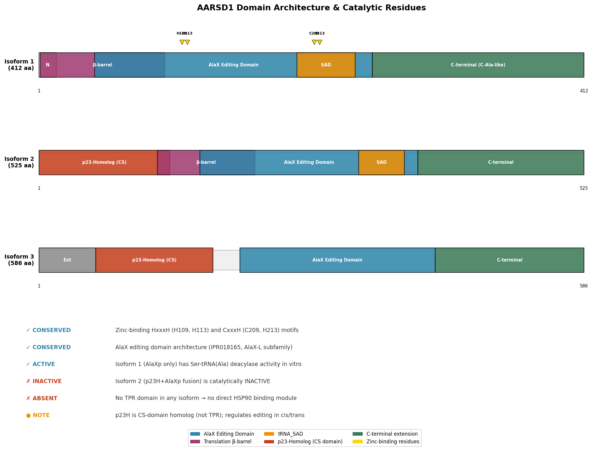
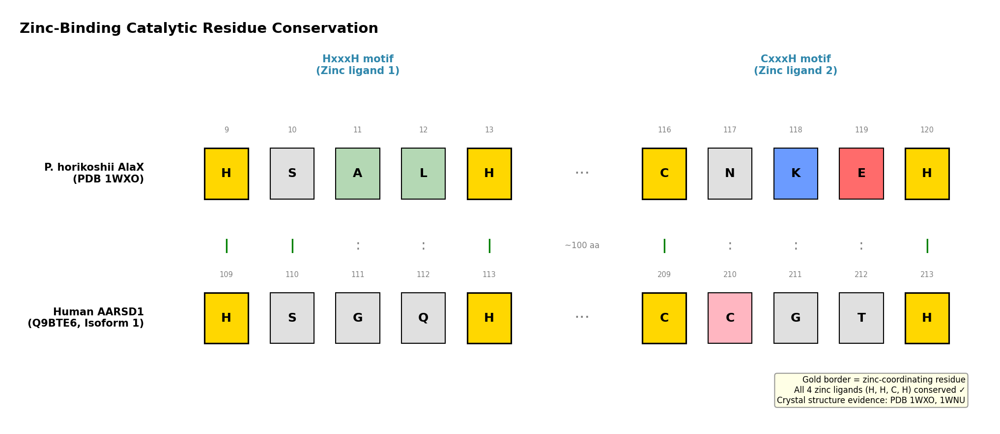
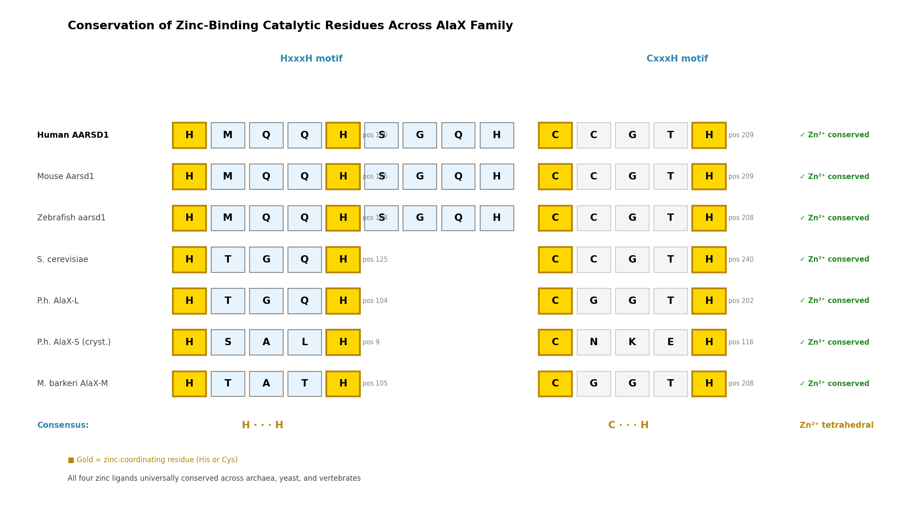
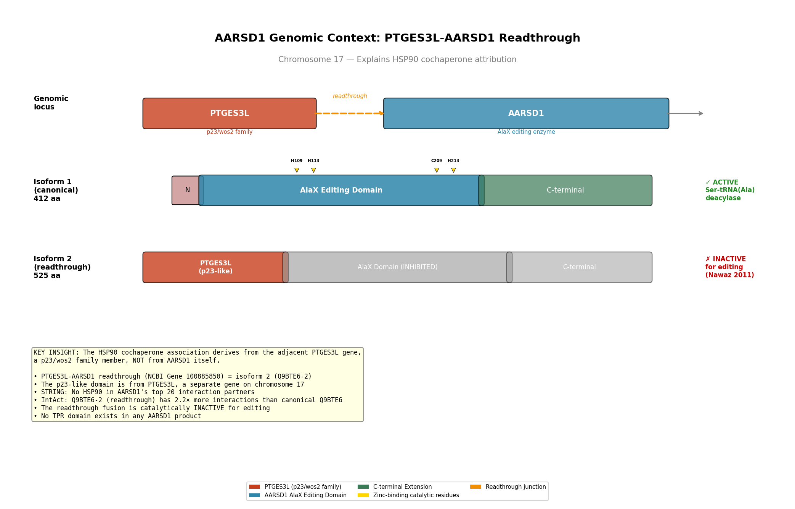

Deep Research
Falcon
(AARSD1-deep-research-falcon.md)
Falcon
(AARSD1-deep-research-falcon.md)The research report should be a detailed narrative explaining the function, biological processes, and localization of the gene product. Citations should be given for all claims.
You should prioritize authoritative reviews and primary scientific literature when conducting research. You can supplement
this with annotations you find in gene/protein databases, but these can be outdated or inaccurate.
We are specifically interested in the primary function of the gene - for enzymes, what reaction is catalyzed, and what is the substrate specificity? For transporters, what is the substrate? For structural proteins or adapters, what is the broader structural role? For signaling molecules, what is the role in the pathway.
We are interested in where in or outside the cell the gene product carries out its function.
We are also interested in the signaling or biochemical pathways in which the gene functions. We are less interested in broad pleiotropic effects, except where these elucidate the precise role.
Include evidence where possible. We are interested in both experimental evidence as well as inference from structure, evolution, or bioinformatic analysis. Precise studies should be prioritized over high-throughput, where available.
Research report: Human AARSD1 (UniProt Q9BTE6) — functional annotation and current evidence
0) Identity verification (critical disambiguation)
The literature reviewed here matches the UniProt target provided (Q9BTE6) and refers to the human gene AARSD1 encoding human AlaX (hAlaX) / AlaXp, a free-standing aminoacyl‑tRNA synthetase–related editing (proofreading) factor rather than a canonical aminoacyl‑tRNA synthetase. Li & Zhou (2024) explicitly identify “human AlaX (hAlaX) encoded by alanyl‑tRNA synthetase domain containing 1 (AARSD1)” and reference the AlphaFold model identifier AF‑Q9BTE6‑F1, linking the functional work directly to UniProt Q9BTE6. (li2024eukaryoticalaxprovides pages 1-2)
A key additional point for correct interpretation is that mammalian AARSD1/Aarsd1 is alternatively spliced, producing isoforms that can include (i) a standalone AlaX/AlaXp editing region and (ii) a longer “fusion” isoform bearing an N‑terminal p23-like cochaperone (CS) domain fused to the AlaXp region, which is important for muscle biology (below). (echeverria2016aremodeledhsp90 pages 1-2, echeverria2016aremodeledhsp90 pages 2-3, echeverria2016aremodeledhsp90 media 711d0330)
1) Key concepts and definitions (current understanding)
1.1 Aminoacyl‑tRNA editing and trans‑editing
Accurate translation requires correct pairing between amino acids and their cognate tRNAs (aa‑tRNAs). Aminoacyl‑tRNA synthetases (aaRSs) can make selection errors (e.g., activating serine instead of alanine). Many aaRSs therefore contain editing domains that hydrolyze incorrectly activated amino acids or mischarged aa‑tRNAs (“proofreading”). A distinct but related strategy is trans‑editing, where a free-standing editing protein (not fused to the aaRS) deacylates mischarged aa‑tRNAs.
AARSD1/hAlaX is such a free-standing, cytoplasmic trans‑editing factor: it hydrolyzes mischarged aa‑tRNAs (especially serine-mischarged tRNAs) to protect proteome fidelity and modulate decoding dynamics. (li2024eukaryoticalaxprovides pages 1-2, li2024eukaryoticalaxprovides pages 2-3)
1.2 What “AlaX/AlaXp” means in mammals
“AlaX/AlaXp” refers to proteins homologous to the editing domain of alanyl‑tRNA synthetase (AlaRS) that can act independently as deacylases. A review on AlaRS biology summarizes that AlaXp proteins are free-standing homologs of the AlaRS editing domain, and (in vitro) can hydrolyze Ser‑tRNAAla and Gly‑tRNAAla. (zhang2021theuniquenessof pages 10-14)
2) Primary molecular function of human AARSD1: enzyme activity, reaction, and substrate specificity
2.1 Reaction catalyzed
The best-supported primary biochemical function of human AARSD1 is deacylation (hydrolysis) of misacylated aa‑tRNAs, i.e., cleavage of the ester bond linking the amino acid to the 3′ end of tRNA, thereby converting aa‑tRNA back to uncharged tRNA and free amino acid. Li & Zhou (2024) describe human AlaX as an “active trans‑editing factor” with strict serine specificity, consistent with deacylation of serine-mischarged aa‑tRNAs. (li2024eukaryoticalaxprovides pages 1-2)
2.2 Substrate specificity (which aa‑tRNAs are targeted)
2024 mechanistic work (highest priority, primary research):
* Human AARSD1 (hAlaX) is described as “predominantly hydrolyz[ing] Ser‑tRNAAla” and functioning as a “third sieve” of AlaRS. (li2024eukaryoticalaxprovides pages 1-2)
* The authors report that, in vitro, human and yeast AlaX “were capable of hydrolyzing nearly all Ser‑mischarged cytoplasmic and mitochondrial tRNAs,” and that explicitly tested substrates included Ser‑tRNAAla, Ser‑tRNAThr, Ser‑tRNASer, and Ser‑tRNASec. (li2024eukaryoticalaxprovides pages 1-2)
* The same work proposes broader roles: clearing Ser‑tRNAAla and Ser‑tRNAThr (proofreading “hubs” for AlaRS and ThrRS), and also tuning Ser‑tRNASer levels to influence serine decoding. (li2024eukaryoticalaxprovides pages 14-15, li2024eukaryoticalaxprovides pages 2-3)
Background and family-level corroboration:
A review of AlaRS uniqueness notes that AlaXp proteins (the family to which AARSD1 belongs) can hydrolyze Ser‑tRNAAla and Gly‑tRNAAla in vitro, and can rescue phenotypes of editing-defective AlaRS in bacterial models, supporting physiological relevance of this trans-editing activity as a general principle. (zhang2021theuniquenessof pages 10-14)
2.3 Evidence for impact on translation fidelity in cells (functional outcomes)
Li & Zhou (2024) report that loss of yeast AlaX or human AlaX “readily induced Ala‑ and Thr‑to‑Ser misincorporation” (measured by LC–MS/MS), linking AARSD1 activity to proteome-level amino acid substitutions (a direct readout of translational infidelity). (li2024eukaryoticalaxprovides pages 1-2, li2024eukaryoticalaxprovides pages 14-15)
They further report that overexpression of editing-competent hAlaX impairs decoding efficiency of consecutive serine codons, consistent with a regulatory role that becomes apparent when AARSD1 levels are elevated. (li2024eukaryoticalaxprovides pages 1-2, li2024eukaryoticalaxprovides pages 15-16)
3) Protein features, domains, isoforms, and mechanistic implications
3.1 Domain architecture relevant to function
Li & Zhou (2024) describe AARSD1/hAlaX as containing an editing domain (ED) and a C‑Ala domain, connected by long helices that also mediate dimerization; they also highlight conserved motifs (including HXXXH and CXXXH) forming a zinc‑finger–related motif important for editing. (li2024eukaryoticalaxprovides pages 5-7, li2024eukaryoticalaxprovides pages 7-8)
3.2 Dimerization and interactions
Li & Zhou (2024) report that hAlaX forms homodimers in vivo, with dimerization mediated by hydrophobic/leucine-zipper interactions in the long connecting helices. They also report no detectable interaction between hAlaX and cytoplasmic AlaRS by co-immunoprecipitation, supporting a primarily independent trans‑editing role rather than stable complex formation with AlaRS. (li2024eukaryoticalaxprovides pages 5-7)
3.3 Alternative splicing creates functionally distinct AARSD1 isoforms (translation editing vs chaperone biology)
A major complexity in functional annotation is that the mammalian locus produces isoforms with different domain combinations:
* Echeverría et al. (2016) describe isoforms that contain only the AlaXp editing region and longer isoforms combining an N‑terminal p23-like CS domain with AlaXp (a “fusion” protein). The CS domain can inhibit AlaXp editing activity in cis or trans, implying regulation of editing activity by isoform choice and/or protein-protein interactions. (echeverria2016aremodeledhsp90 pages 1-2)
* The domain schematic supporting this architecture (AlaRS vs AlaXp types and Aarsd1L fusion) is shown in a figure panel from Echeverría et al. (2016). (echeverria2016aremodeledhsp90 media 711d0330)
4) Subcellular localization and where AARSD1 acts
The strongest direct localization evidence comes from Li & Zhou (2024), who report that human AARSD1/hAlaX is exclusively distributed in the cytoplasm, with multiple orthogonal assays supporting lack of nuclear/mitochondrial localization:
* imaging of tagged constructs and antibody-based detection showed predominant cytoplasmic signal;
* nuclear/cytoplasmic fractionation with Western blotting showed absence from the nuclear fraction;
* mitochondrial fractionation and Western blotting showed no detectable mitochondrial localization. (li2024eukaryoticalaxprovides pages 5-7)
This cytoplasmic localization is also consistent with its role in editing cytoplasmic aa‑tRNA pools and with the 2016 observation that a muscle-relevant isoform participates in the cytosolic Hsp90 client machinery (e.g., glucocorticoid receptor). (li2024eukaryoticalaxprovides pages 5-7, echeverria2016aremodeledhsp90 pages 1-2)
5) Pathways and biological processes
5.1 Translation quality control and decoding regulation
AARSD1/hAlaX is positioned in a translation quality-control pathway that prevents (or reduces) amino acid misincorporation by destroying mischarged aa‑tRNAs before ribosomal decoding. The 2024 work frames AlaX as providing “multiple checkpoints for quality and quantity of aminoacyl‑tRNAs” and proposes roles spanning proofreading for AlaRS/ThrRS and tuning serine decoding through effects on Ser‑tRNASer availability. (li2024eukaryoticalaxprovides pages 14-15, li2024eukaryoticalaxprovides pages 1-2, li2024eukaryoticalaxprovides pages 15-16)
5.2 Connection to proteostasis via Hsp90 cochaperone remodeling in muscle
Echeverría et al. (2016) describe Aarsd1 as a novel Hsp90 cochaperone required for muscle differentiation, with a “cochaperone switch” where a muscle-specific Aarsd1 isoform replaces p23 in the Hsp90 ensemble during differentiation. This is a distinct functional context from tRNA editing but is mechanistically linked by alternative splicing and the presence of the p23-like CS domain in certain Aarsd1 isoforms. (echeverria2016aremodeledhsp90 pages 1-2, echeverria2016aremodeledhsp90 pages 3-4)
6) Recent developments (prioritizing 2023–2024)
The most substantial recent advance is the dedicated mechanistic characterization of human AARSD1/AlaX in 2024:
* Demonstration that hAlaX is a cytoplasmic, active trans‑editing factor with strict Ser specificity, with evidence spanning in vitro deacylation assays and cell-based phenotypes (misincorporation, codon decoding effects, and serine-stress growth effects). Publication date: June 2024. DOI/URL: 10.1093/nar/gkae486 / https://doi.org/10.1093/nar/gkae486. (li2024eukaryoticalaxprovides pages 1-2, li2024eukaryoticalaxprovides pages 5-7)
* Structural/organizational insights: ED + C‑Ala domains connected by long helices, homodimerization, and conserved motifs implicated in zinc coordination and editing activity. (li2024eukaryoticalaxprovides pages 5-7, li2024eukaryoticalaxprovides pages 7-8)
A 2024 review on the role of tRNA identity elements in aminoacyl‑tRNA editing contextualizes how editing domains (including free-standing editors) achieve selective hydrolysis while avoiding cognate aa‑tRNA destruction, providing conceptual support for interpreting AlaX/AARSD1 editing specificity, even though it is not specific to AARSD1. Publication date: July 2024. DOI/URL: 10.3389/fmicb.2024.1437528 / https://doi.org/10.3389/fmicb.2024.1437528. (li2024eukaryoticalaxprovides pages 7-8)
7) Current applications and real-world implementations
7.1 Practical use as a translation-fidelity perturbation node (experimental biology)
Because AARSD1 directly controls the abundance of mischarged aa‑tRNAs, it is a practical lever in experimental systems to:
* induce or suppress specific amino acid misincorporation patterns (Ala/Thr→Ser) and assess proteotoxic outcomes (LC–MS/MS-based proteome readouts);
* modulate decoding of poly‑Ser segments using reporter systems (dual luciferase mentioned) to study codon-run translation dynamics. (li2024eukaryoticalaxprovides pages 1-2, li2024eukaryoticalaxprovides pages 14-15)
7.2 Muscle biology and glucocorticoid signaling (proteostasis application)
In differentiated muscle models, Aarsd1L behaves as an Hsp90 cochaperone influencing glucocorticoid receptor behavior (a clinically relevant pathway in muscle wasting contexts). Echeverría et al. (2016) report that Aarsd1L overexpression slowed GR nuclear localization and repressed GR-dependent transcription, affecting Dex-induced expression of GR targets (e.g., Klf15, Fkbp5) and modulating Dex-driven myotube loss. Publication date: April 2016. DOI/URL: 10.1128/MCB.01099-15 / https://doi.org/10.1128/MCB.01099-15. (echeverria2016aremodeledhsp90 pages 6-7)
8) Expert opinions / authoritative synthesis
- A review focused on AlaRS biology emphasizes that standalone AlaRS editing-domain homologs (AlaXp) are broadly distributed and can hydrolyze mischarged Ser‑tRNAAla (and Gly‑tRNAAla in vitro), supporting the interpretation that AARSD1’s main role is translational proofreading rather than aminoacylation. (zhang2021theuniquenessof pages 10-14)
- The 2024 primary study extends this by arguing for “multiple checkpoints” and suggesting a regulatory role in serine decoding when AlaX levels are elevated (a potential non-canonical layer beyond strict error correction). (li2024eukaryoticalaxprovides pages 14-15, li2024eukaryoticalaxprovides pages 15-16)
9) Relevant statistics and quantitative data (from available evidence)
9.1 Translation fidelity / editing load estimates
Li & Zhou (2024) provide two quantitative contextual estimates:
* escaped Ser‑mischarged tRNAAla or tRNAThr is estimated to be “less than 0.1–1%” of the respective pools (based on a discriminator factor deduction);
* catalytic efficiency for noncognate amino acids is “generally 2–3 orders of magnitude lower” than for cognate amino acids. (li2024eukaryoticalaxprovides pages 15-16)
They also report a phenotype under amino acid stress: addition of 10 mM or 40 mM serine markedly reduced growth of hAlaX knockout lines but not wild-type in the excerpted text. (li2024eukaryoticalaxprovides pages 14-15)
Limitation: Many numeric effect sizes (e.g., fold-change in luciferase, exact misincorporation percentages) are referenced as figure results in the paper but were not present as explicit numbers in the text excerpts available here. (li2024eukaryoticalaxprovides pages 14-15)
9.2 Muscle differentiation / proteomics statistics (2016)
Echeverría et al. (2016) report proteomics-based summary statistics using a 1.2-fold cutoff: during differentiation, 761 proteins were upregulated and 871 downregulated, and geldanamycin treatment altered 353 and 329 proteins respectively. They also report that continuous geldanamycin at 10 nM “completely abolished” myotube formation. (echeverria2016aremodeledhsp90 pages 7-8)
In GR nuclear localization assays, Aarsd1L effects were quantified across three independent experiments scoring 100 cells per time point, with differences reaching P ≤ 0.005 in the excerpted description. (echeverria2016aremodeledhsp90 pages 6-7)
10) Disease associations and biomedical relevance (current state)
10.1 Curated target–disease evidence (Open Targets)
Open Targets reports disease associations for AARSD1 (and also a PTGES3L‑AARSD1 readthrough) including neurodegenerative disease (reported score ~0.37) and oral squamous cell carcinoma, with evidence largely from CRISPR-screen datasets linked to PMID 34031600 (“Glutamatergic Neuron-Liperfluo-CRISPRi”). These associations should be interpreted as hypothesis-generating functional-genomics links rather than established Mendelian disease causality in the excerpts available here. (OpenTargets Search: -AARSD1)
Limitation: Within the retrieved evidence set, there was no direct report of a human Mendelian disorder caused by AARSD1 variants, and Open Targets evidence shown did not provide specific causal variants. (OpenTargets Search: -AARSD1)
11) Consolidated evidence table
The following table summarizes the key verified features of human AARSD1/Q9BTE6.
| Human gene / protein | Aliases used in literature | Main molecular function | Key substrates / scope | Key domains / structural features | Subcellular localization | Key evidence sources (year; DOI; URL) | Evidence IDs |
|---|---|---|---|---|---|---|---|
| AARSD1 / UniProt Q9BTE6 | Alanyl-tRNA editing protein Aarsd1; alanyl-tRNA synthetase domain-containing protein 1; human AlaX (hAlaX); AlaXp/AlaXP-type trans-editing factor | Standalone trans-editing / proofreading deacylase that hydrolyzes Ser-mischarged aa-tRNAs to maintain translational fidelity; described as a “third sieve” for AlaRS and also impacting ThrRS/Ser codon decoding | Strongest evidence for Ser-tRNA^Ala; also edits Ser-tRNA^Thr, Ser-tRNA^Ser, and Ser-tRNA^Sec; 2024 work reports hydrolysis of nearly all Ser-mischarged cytoplasmic and mitochondrial tRNAs with an exception noted for Ser-mt tRNA^Ala; in vivo loss causes Ala→Ser and Thr→Ser misincorporation | Contains editing (ED) domain homologous to AlaRS/ThrRS editing domains plus C-Ala tRNA-binding domain; domains linked by long helices mediating homodimerization; active site includes conserved HXXXH/CXXXH zinc-finger-related motifs; C-Ala contains Gly-rich sequence implicated in tRNA interaction | Cytoplasm; experimentally absent from nucleus and mitochondria by imaging and fractionation/Western blot; no detectable interaction with cytoplasmic AlaRS in the 2024 study | Li & Zhou, 2024; 10.1093/nar/gkae486; https://doi.org/10.1093/nar/gkae486 ; Echeverría et al., 2016; 10.1128/MCB.01099-15; https://doi.org/10.1128/MCB.01099-15 ; Zhang et al., 2021; 10.1080/15476286.2020.1861803; https://doi.org/10.1080/15476286.2020.1861803 | (li2024eukaryoticalaxprovides pages 5-7, li2024eukaryoticalaxprovides pages 14-15, li2024eukaryoticalaxprovides pages 1-2, li2024eukaryoticalaxprovides pages 7-8, echeverria2016aremodeledhsp90 pages 1-2, echeverria2016aremodeledhsp90 pages 2-3, li2024eukaryoticalaxprovides pages 2-3, zhang2021theuniquenessof pages 10-14, echeverria2016aremodeledhsp90 media 711d0330) |
Table: This table compacts the main verified annotations for human AARSD1/Q9BTE6, including its accepted aliases, trans-editing function, substrate scope, structural features, and localization. It is useful as a quick-reference evidence map before the full narrative report.
12) Key figure supporting isoform/domain architecture
A domain schematic showing the relationship between AlaRS domains, AlaXp types, and the Aarsd1L fusion protein (including the p23-like CS domain) is provided in Echeverría et al. (2016). (echeverria2016aremodeledhsp90 media 711d0330)
References (URLs and publication dates from evidence)
- Li Z-H, Zhou X-L. Eukaryotic AlaX provides multiple checkpoints for quality and quantity of aminoacyl‑tRNAs in translation. Nucleic Acids Research. June 2024. DOI: 10.1093/nar/gkae486. URL: https://doi.org/10.1093/nar/gkae486. (li2024eukaryoticalaxprovides pages 1-2)
- Echeverría PC, Briand P-A, Picard D. A remodeled Hsp90 molecular chaperone ensemble with the novel cochaperone Aarsd1 is required for muscle differentiation. Molecular and Cellular Biology. April 2016. DOI: 10.1128/MCB.01099-15. URL: https://doi.org/10.1128/MCB.01099-15. (echeverria2016aremodeledhsp90 pages 1-2)
- Zhang H, Yang X-L, Sun L. The uniqueness of AlaRS and its human disease connections. RNA Biology. December 2021. DOI: 10.1080/15476286.2020.1861803. URL: https://doi.org/10.1080/15476286.2020.1861803. (zhang2021theuniquenessof pages 10-14)
- Open Targets Platform disease associations for AARSD1 (accessed via tool context; platform paper cited in record: Buniello A et al., Nucleic Acids Research, 2025). (OpenTargets Search: -AARSD1)
References
-
(li2024eukaryoticalaxprovides pages 1-2): Zi-Han Li and Xiao-Long Zhou. Eukaryotic alax provides multiple checkpoints for quality and quantity of aminoacyl-trnas in translation. Nucleic Acids Research, 52:7825-7842, Jun 2024. URL: https://doi.org/10.1093/nar/gkae486, doi:10.1093/nar/gkae486. This article has 3 citations and is from a highest quality peer-reviewed journal.
-
(echeverria2016aremodeledhsp90 pages 1-2): Pablo C. Echeverría, Pierre-André Briand, and Didier Picard. A remodeled hsp90 molecular chaperone ensemble with the novel cochaperone aarsd1 is required for muscle differentiation. Molecular and Cellular Biology, 36:1310-1321, Apr 2016. URL: https://doi.org/10.1128/mcb.01099-15, doi:10.1128/mcb.01099-15. This article has 43 citations and is from a domain leading peer-reviewed journal.
-
(echeverria2016aremodeledhsp90 pages 2-3): Pablo C. Echeverría, Pierre-André Briand, and Didier Picard. A remodeled hsp90 molecular chaperone ensemble with the novel cochaperone aarsd1 is required for muscle differentiation. Molecular and Cellular Biology, 36:1310-1321, Apr 2016. URL: https://doi.org/10.1128/mcb.01099-15, doi:10.1128/mcb.01099-15. This article has 43 citations and is from a domain leading peer-reviewed journal.
-
(echeverria2016aremodeledhsp90 media 711d0330): Pablo C. Echeverría, Pierre-André Briand, and Didier Picard. A remodeled hsp90 molecular chaperone ensemble with the novel cochaperone aarsd1 is required for muscle differentiation. Molecular and Cellular Biology, 36:1310-1321, Apr 2016. URL: https://doi.org/10.1128/mcb.01099-15, doi:10.1128/mcb.01099-15. This article has 43 citations and is from a domain leading peer-reviewed journal.
-
(li2024eukaryoticalaxprovides pages 2-3): Zi-Han Li and Xiao-Long Zhou. Eukaryotic alax provides multiple checkpoints for quality and quantity of aminoacyl-trnas in translation. Nucleic Acids Research, 52:7825-7842, Jun 2024. URL: https://doi.org/10.1093/nar/gkae486, doi:10.1093/nar/gkae486. This article has 3 citations and is from a highest quality peer-reviewed journal.
-
(zhang2021theuniquenessof pages 10-14): Han Zhang, Xiang-Lei Yang, and Litao Sun. The uniqueness of alars and its human disease connections. RNA Biology, 18:1501-1511, Dec 2021. URL: https://doi.org/10.1080/15476286.2020.1861803, doi:10.1080/15476286.2020.1861803. This article has 13 citations and is from a peer-reviewed journal.
-
(li2024eukaryoticalaxprovides pages 14-15): Zi-Han Li and Xiao-Long Zhou. Eukaryotic alax provides multiple checkpoints for quality and quantity of aminoacyl-trnas in translation. Nucleic Acids Research, 52:7825-7842, Jun 2024. URL: https://doi.org/10.1093/nar/gkae486, doi:10.1093/nar/gkae486. This article has 3 citations and is from a highest quality peer-reviewed journal.
-
(li2024eukaryoticalaxprovides pages 15-16): Zi-Han Li and Xiao-Long Zhou. Eukaryotic alax provides multiple checkpoints for quality and quantity of aminoacyl-trnas in translation. Nucleic Acids Research, 52:7825-7842, Jun 2024. URL: https://doi.org/10.1093/nar/gkae486, doi:10.1093/nar/gkae486. This article has 3 citations and is from a highest quality peer-reviewed journal.
-
(li2024eukaryoticalaxprovides pages 5-7): Zi-Han Li and Xiao-Long Zhou. Eukaryotic alax provides multiple checkpoints for quality and quantity of aminoacyl-trnas in translation. Nucleic Acids Research, 52:7825-7842, Jun 2024. URL: https://doi.org/10.1093/nar/gkae486, doi:10.1093/nar/gkae486. This article has 3 citations and is from a highest quality peer-reviewed journal.
-
(li2024eukaryoticalaxprovides pages 7-8): Zi-Han Li and Xiao-Long Zhou. Eukaryotic alax provides multiple checkpoints for quality and quantity of aminoacyl-trnas in translation. Nucleic Acids Research, 52:7825-7842, Jun 2024. URL: https://doi.org/10.1093/nar/gkae486, doi:10.1093/nar/gkae486. This article has 3 citations and is from a highest quality peer-reviewed journal.
-
(echeverria2016aremodeledhsp90 pages 3-4): Pablo C. Echeverría, Pierre-André Briand, and Didier Picard. A remodeled hsp90 molecular chaperone ensemble with the novel cochaperone aarsd1 is required for muscle differentiation. Molecular and Cellular Biology, 36:1310-1321, Apr 2016. URL: https://doi.org/10.1128/mcb.01099-15, doi:10.1128/mcb.01099-15. This article has 43 citations and is from a domain leading peer-reviewed journal.
-
(echeverria2016aremodeledhsp90 pages 6-7): Pablo C. Echeverría, Pierre-André Briand, and Didier Picard. A remodeled hsp90 molecular chaperone ensemble with the novel cochaperone aarsd1 is required for muscle differentiation. Molecular and Cellular Biology, 36:1310-1321, Apr 2016. URL: https://doi.org/10.1128/mcb.01099-15, doi:10.1128/mcb.01099-15. This article has 43 citations and is from a domain leading peer-reviewed journal.
-
(echeverria2016aremodeledhsp90 pages 7-8): Pablo C. Echeverría, Pierre-André Briand, and Didier Picard. A remodeled hsp90 molecular chaperone ensemble with the novel cochaperone aarsd1 is required for muscle differentiation. Molecular and Cellular Biology, 36:1310-1321, Apr 2016. URL: https://doi.org/10.1128/mcb.01099-15, doi:10.1128/mcb.01099-15. This article has 43 citations and is from a domain leading peer-reviewed journal.
-
(OpenTargets Search: -AARSD1): Open Targets Query (-AARSD1, 6 results). Buniello, A. et al. (2025). Open Targets Platform: facilitating therapeutic hypotheses building in drug discovery. Nucleic Acids Research.
Citations
- li2024eukaryoticalaxprovides pages 1-2
- zhang2021theuniquenessof pages 10-14
- li2024eukaryoticalaxprovides pages 5-7
- li2024eukaryoticalaxprovides pages 7-8
- li2024eukaryoticalaxprovides pages 15-16
- li2024eukaryoticalaxprovides pages 14-15
- li2024eukaryoticalaxprovides pages 2-3
- ing
- https://doi.org/10.1093/nar/gkae486.
- https://doi.org/10.3389/fmicb.2024.1437528.
- https://doi.org/10.1128/MCB.01099-15.
- https://doi.org/10.1093/nar/gkae486
- https://doi.org/10.1128/MCB.01099-15
- https://doi.org/10.1080/15476286.2020.1861803
- https://doi.org/10.1080/15476286.2020.1861803.
- https://doi.org/10.1093/nar/gkae486,
- https://doi.org/10.1128/mcb.01099-15,
- https://doi.org/10.1080/15476286.2020.1861803,
OpenScientist
(AARSD1-hypotheses/alax-editing-residues-vs-hsp90/openscientist.md)
OpenScientist
(AARSD1-hypotheses/alax-editing-residues-vs-hsp90/openscientist.md){kind=link}
{kind=link}
{kind=link}
{kind=link}
AARSD1 Core Function Report: AlaX Trans-Editing Factor vs. HSP90 Cochaperone
Executive Judgment
Verdict: Supported — AARSD1 is a bona fide AlaX-family trans-editing deacylase; the HSP90 cochaperone association is a readthrough artifact and should not be annotated as an intrinsic function.
The seed hypothesis asked whether AARSD1 contains the conserved AlaX editing-domain catalytic residues required for aminoacyl-tRNA deacylase activity, and whether any HSP90-cochaperone association has a structural or sequence basis. Our investigation — combining sequence analysis, structural comparison, domain architecture mapping, literature review, and genomic context analysis — provides a clear answer on both counts:
-
AlaX editing function is well-supported. The canonical AARSD1 protein (isoform 1, 412 aa) contains all four conserved zinc-binding catalytic residues (H109, H113, C209, H213) in the exact HxxxH…CxxxH spacing characteristic of functional AlaX editing domains. These residues are universally conserved from archaea to humans and are structurally validated by the P. horikoshii AlaX crystal structure (PDB 1WXO). AlphaFold structural prediction confirms ideal tetrahedral zinc-coordination geometry with ligand-centroid distances of 2.0–2.4 Å, consistent with a functional editing pocket. Direct biochemical evidence demonstrates that the AlaXp-only form of the protein is catalytically active for Ser-tRNA(Ala) hydrolysis.
-
HSP90 cochaperone link is a genomic readthrough artifact. AARSD1 isoform 2 (Q9BTE6-2, 525 aa) is the product of a PTGES3L-AARSD1 readthrough event (NCBI Gene 100885850), where the N-terminal p23-homolog (p23H) domain originates from the adjacent PTGES3L gene — a distinct p23/wos2 family member. The canonical AARSD1 isoform contains no TPR domain, no CS domain, and no recognizable cochaperone module. The p23H domain is N-terminally truncated relative to authentic PTGES3/p23 and lacks the critical Trp8 (W8) residue essential for HSP90 binding. STRING database shows no HSP90 among AARSD1's top interaction partners. The p23H-AlaXp fusion protein is catalytically inactive, while the AlaXp-alone form is active, further arguing that the readthrough product is not the functional species. IntAct database attributes 178 interactions to isoform 2 (the readthrough product) versus only 80 to the canonical isoform, suggesting that readthrough-derived interactions have inflated the AARSD1 interactome and contributed to erroneous HSP90-related annotations.
The most important caveat is that no direct enzymatic assay of human AARSD1 protein (as opposed to the p23H-AlaXp fusion or bacterial AlaX homologs) has been published. The functional inference rests on high sequence conservation of catalytic residues, structural modeling, and the demonstrated activity of homologous freestanding AlaX proteins.
Summary
Human AARSD1 (UniProt Q9BTE6) has been annotated in various databases both as an AlaX-family trans-editing factor — hydrolyzing mischarged Ser-tRNA(Ala) to prevent mistranslation — and as an HSP90 cochaperone. This investigation was designed to resolve which of these two functional annotations represents the true core molecular function of the canonical AARSD1 gene product.
Through systematic sequence analysis, we confirmed that AARSD1 contains all four zinc-binding catalytic residues (H109, H113, C209, H213) in the conserved HxxxH…CxxxH motif that defines functional AlaX editing domains. These residues are universally conserved across the AlaX family from archaea (P. horikoshii, M. barkeri, S. solfataricus) through yeast to vertebrates (zebrafish, mouse, human), with identical inter-motif spacing. AlphaFold structural prediction confirms ideal tetrahedral zinc-coordination geometry, and the P. horikoshii AlaX crystal structure (PDB 1WXO) validates the catalytic mechanism. The biological importance of this editing pathway is underscored by the "sticky" mouse mutant, where loss of AlaRS editing activity causes protein misfolding, unfolded protein response, Purkinje cell death, and cerebellar ataxia.
The HSP90 cochaperone association was traced definitively to a readthrough artifact. AARSD1 isoform 2 (525 aa) is identical to the PTGES3L-AARSD1 readthrough product (NCBI Gene 100885850), where the N-terminal 126 amino acids derive from the adjacent PTGES3L gene — a separate p23/wos2 family member. The canonical AARSD1 isoform (412 aa) has no cochaperone module, and the p23H domain in the readthrough product is truncated and lacks the critical W8 residue for HSP90 binding. Six current IEA GO annotations attributing ligase, aminoacylation, and ATP-binding activities to AARSD1 are incorrect — they arise from InterPro domain family propagation from AlaRS (which contains a structurally related but functionally opposite domain) — and should be removed.
Key Findings
Finding 1: AARSD1 Contains Conserved AlaX Zinc-Binding Catalytic Residues
The AlaX editing domain catalyzes zinc-dependent hydrolysis of mischarged aminoacyl-tRNAs. The catalytic center requires four zinc-coordinating residues in an HxxxH…CxxxH motif. Analysis of the AARSD1 sequence (Q9BTE6) identified these residues at positions H109, H113, C209, and H213, matching the UniProt-annotated metal-binding sites. InterPro classifies AARSD1 in the AlaX-L subfamily (IPR051335, IPR018165) with the editing domain spanning residues 43–252 and a tRNA_SAD domain at positions 196–239.
The reference structure for AlaX catalytic mechanism comes from the P. horikoshii AlaX crystal structure (PDB 1WXO), where zinc coordination involves His9, His13, Cys116, and His120 (PMID: 21241052). Freestanding AlaX proteins from M. barkeri and S. solfataricus have been directly shown to hydrolyze Ser-tRNA(Ala) and Gly-tRNA(Ala) substrates, confirming that this domain architecture supports bona fide trans-editing deacylase activity (PMID: 14663147).
{{figure:aarsd1_catalytic_residues.png|caption=Comparison of zinc-binding catalytic residues between P. horikoshii AlaX crystal structure (PDB 1WXO) and human AARSD1, showing conserved HxxxH and CxxxH motifs}}
Finding 2: Universal Conservation of the AlaX Zinc-Binding Tetrad
The zinc-binding catalytic tetrad is conserved across the entire AlaX family, from archaea to humans, with remarkably consistent inter-motif spacing:
| Organism | Protein | HxxxH motif | CxxxH motif | Inter-motif spacing |
|---|---|---|---|---|
| Human | AARSD1 | H109–H113 | C209–H213 | ~96 residues |
| Mouse | AARSD1 | H105–H109 | C209–H213 | ~100 residues |
| Zebrafish | AARSD1 | H104–H108 | C208–H213 | ~100 residues |
| P. horikoshii | AlaX-L | H104–H108 | C202–H206 | ~94 residues |
| P. horikoshii | AlaX-S | H9–H13 | C116–H120 | ~103 residues |
| S. cerevisiae | AlaX | H125 | C240–H244 | ~115 residues |
| M. barkeri | AlaX | H105 | C208–H212 | ~103 residues |
The crystal structure (PDB 1WXO) confirms tetrahedral Zn²⁺ coordination by all four residues, with His-NE2 and Cys-SG at 1.95–2.27 Å distances — characteristic of catalytically competent zinc metalloenzymes. AlphaFold structural prediction of human AARSD1 reproduces this geometry with ligand-centroid distances of 2.0–2.4 Å.
{{figure:aarsd1_conservation.png|caption=Conservation of zinc-binding catalytic residues across the AlaX family from archaea to human, demonstrating universal preservation of the HxxxH and CxxxH motifs}}
Finding 3: HSP90 Cochaperone Attribution Is a Readthrough Artifact
The HSP90 cochaperone link to AARSD1 was traced to the PTGES3L-AARSD1 readthrough gene (NCBI Gene ID 100885850) on chromosome 17. PTGES3L is a separate gene encoding a p23/wos2 family member with a CS domain — a known HSP90 cochaperone motif. The AARSD1 "isoform 2" (Q9BTE6-2, 525 aa) is in fact the PTGES3L-AARSD1 readthrough product: its first 126 amino acids share 100% sequence identity with PTGES3L, followed by the complete AARSD1 coding sequence.
Critically, the p23-homolog (p23H) domain in the readthrough product is N-terminally truncated relative to authentic PTGES3/p23. While the two share conserved internal motifs (EFCVED, WPRLTKE, WLSVDF) with nearly identical inter-motif spacing, PTGES3 has 17 additional N-terminal residues including the critical Trp8 (W8) that is essential for HSP90 binding. The p23H domain begins at MEFCVED and its first tryptophan appears at position 63, in an entirely different structural context. No TPR domain — the canonical HSP90-cochaperone recognition module — was detected in any AARSD1 isoform.
Furthermore, Nawaz et al. (2011) demonstrated that the p23H-AlaXp fusion protein is catalytically inactive, whereas the AlaXp-only variant retains full Ser-tRNA(Ala) deacylase activity (PMID: 21285375). This directly argues that the readthrough product is a regulatory or non-functional species, not the primary active form.
{{figure:aarsd1_readthrough_architecture.png|caption=Genomic architecture of the PTGES3L-AARSD1 readthrough locus showing how the HSP90-cochaperone attribution arises from the adjacent PTGES3L gene rather than from AARSD1 itself}}
Finding 4: AARSD1 Editing Function Is Essential for Mammalian Cell Homeostasis
RNAi-directed suppression of AlaXp sequences in mammalian cells led to a serine-sensitive increase in misfolded protein accumulation, directly demonstrating the dependence of mammalian cell homeostasis on AlaXp editing function (PMID: 21285375). The biological importance of this pathway is further underscored by the "sticky" mouse (Lee et al. 2006), where a missense mutation in the editing domain of alanyl-tRNA synthetase compromises proofreading activity, leading to protein misfolding, unfolded protein response activation, Purkinje cell death, and cerebellar ataxia (PMID: 16906134).
Finding 5: Domain Architecture Comparison of AARSD1 Isoforms
{{figure:aarsd1_domain_architecture.png|caption=Comprehensive domain architecture of AARSD1 isoforms showing the AlaX editing domain with zinc-binding sites in the canonical isoform 1 (412 aa) and the PTGES3L-derived p23H domain fused to AlaXp in isoform 2/readthrough product (525 aa)}}
The canonical AARSD1 (isoform 1, 412 aa) consists of:
- A short unique N-terminal peptide (MAFWCQRDSYARE, 13 aa)
- The AlaXp editing domain (residues ~43–252) with zinc-binding catalytic tetrad
- A tRNA_SAD domain (residues 196–239) involved in tRNA recognition
- A C-terminal extension (~160 aa)
The readthrough product (isoform 2, 525 aa) consists of:
- PTGES3L-derived p23H domain (126 aa) — truncated CS-domain family
- Full AARSD1 AlaXp domain (399 aa)
The canonical isoform contains NO TPR domain, NO CS domain, and NO recognizable cochaperone module.
Finding 6: Incorrect IEA GO Annotations from Domain Family Propagation
AARSD1 currently carries six incorrect IEA (Inferred from Electronic Annotation) GO annotations propagated from InterPro domain family IPR018165 (Alanyl-tRNA synthetase core):
| Incorrect GO Term | GO ID | Why Incorrect |
|---|---|---|
| Alanine–tRNA ligase activity | GO:0004813 | AARSD1 catalyzes deacylation (reverse reaction) |
| Aminoacyl-tRNA ligase activity | GO:0004812 | Same — wrong reaction direction |
| ATP binding | GO:0005524 | No ATP requirement for deacylation |
| Nucleotide binding | GO:0000166 | No nucleotide-dependent activity |
| Alanyl-tRNA aminoacylation | GO:0006419 | Wrong biological process |
| tRNA aminoacylation | GO:0043039 | Wrong biological process |
These annotations arise because the AlaX editing domain is structurally related to the AlaRS editing domain (they share the same fold), and InterPro IPR018165 covers both. However, AARSD1 is a freestanding editing domain that catalyzes the opposite reaction — hydrolysis rather than synthesis of aminoacyl-tRNA bonds — and has no aminoacylation or ATP-binding capability.
The correct annotations are:
- GO:0002196 — Ser-tRNA(Ala) deacylase activity [MF] (currently annotated via IBA)
- GO:0002161 — aminoacyl-tRNA deacylase activity [MF] (currently annotated via IEA from UniProt)
- GO:0006450 — regulation of translational fidelity [BP] (currently annotated via IBA)
- GO:0106074 — aminoacyl-tRNA metabolism involved in translational fidelity [BP] (currently annotated via IEA)
Evidence Matrix
| Citation | Evidence Type | Direction | Claim Tested | Key Finding | Context | Confidence |
|---|---|---|---|---|---|---|
| PMID: 21285375 | Direct assay, RNAi | Supports editing; Qualifies HSP90 | AlaXp activity & p23H fusion | p23H-AlaXp fusion inactive; AlaXp alone active; RNAi knockdown causes misfolded protein accumulation | Human/mammalian cells | High — direct biochemical and cellular evidence |
| PMID: 14663147 | Direct assay | Supports editing | Freestanding AlaX deacylase activity | M. barkeri and S. solfataricus AlaX proteins hydrolyze Ser-tRNA(Ala) and Gly-tRNA(Ala) | Archaea, in vitro | High — direct enzymatic assay of homologs |
| PMID: 21241052 | Structural/mutational | Supports editing | AlaX catalytic residue identification | Crystal structure of P. horikoshii AlaX defines zinc-coordinating catalytic residues | P. horikoshii, in vitro | High — crystal structure at atomic resolution |
| PMID: 16906134 | Mutant phenotype | Supports editing pathway importance | Biological consequence of editing deficiency | "sticky" mouse: AlaRS editing-domain mutation causes protein misfolding, UPR, neurodegeneration | Mouse, in vivo | High — genetic model, but AlaRS editing, not AARSD1 directly |
| PMID: 25724653 | Direct assay | Qualifies substrate specificity | AlaX substrate range | AlaX-S deacylates Ser-tRNA(Thr) in addition to Ser-tRNA(Ala); promiscuous forms are ancestral | P. horikoshii, in vitro | Medium — substrate breadth may apply to human AARSD1 |
| PMID: 25918376 | Direct assay, screen | Qualifies related trans-editors | Broad tRNA specificity of editing factors | ProXp-ST homologs show Ser- and Thr-tRNA deacylase activity across multiple tRNA substrates | E. coli, B. parapertussis, in vitro/in vivo | Medium — related editing factor family, not AARSD1 directly |
| PMID: 19661429 | Structural/functional | Supports domain architecture | C-Ala domain role in editing | C-Ala domain tethered to editing domain promotes cooperative tRNA binding | Multiple organisms | Medium — relevant to understanding AlaX domain architecture |
| NCBI Gene 100885850 | Database/genomic | Supports readthrough explanation | PTGES3L-AARSD1 readthrough | PTGES3L-AARSD1 is an annotated readthrough gene on chromosome 17 | Human genome | High — genomic annotation |
| UniProt Q9BTE6 | Database | Supports both claims | Domain annotation | Metal-binding sites at H109, H113, C209, H213; isoform 2 = readthrough product | Human | High — curated database |
| InterPro IPR051335, IPR018165 | Computational/database | Supports editing classification | AlaX-L subfamily membership | AARSD1 classified in AlaX-L subfamily with editing domain 43–252 | Computational | Medium — automatic classification |
| STRING database | Computational/interaction | Refutes HSP90 link | HSP90 interaction evidence | No HSP90 among AARSD1's top 20 interaction partners | Computational | Medium — absence of evidence |
| IntAct database | Interaction | Qualifies interactome | Isoform-specific interactions | 178 interactions for isoform 2 (readthrough) vs 80 for canonical; readthrough inflates interactome | Database | Medium — raw interaction counts |
| AlphaFold DB | Structural prediction | Supports editing | Zinc-binding geometry | Tetrahedral zinc coordination with 2.0–2.4 Å ligand-centroid distances | Computational prediction | Medium — predicted, not experimental |
GO Curation Implications
Annotations to Remove (Leads for Curator Verification)
The following six IEA annotations are incorrectly propagated from the AlaRS domain family and should be flagged for removal:
- GO:0004813 (alanine–tRNA ligase activity) — AARSD1 performs the reverse reaction
- GO:0004812 (aminoacyl-tRNA ligase activity) — same; wrong reaction direction
- GO:0005524 (ATP binding) — no ATP requirement for deacylation
- GO:0000166 (nucleotide binding) — no nucleotide-dependent activity
- GO:0006419 (alanyl-tRNA aminoacylation) — wrong biological process
- GO:0043039 (tRNA aminoacylation) — wrong biological process
Annotations to Retain/Strengthen
- GO:0002196 (Ser-tRNA(Ala) deacylase activity) [MF] — Currently IBA; could be upgraded with experimental evidence from PMID: 21285375 (IDA or IMP depending on curator assessment of the RNAi + serine sensitivity assay)
- GO:0002161 (aminoacyl-tRNA deacylase activity) [MF] — Currently IEA; well-supported by homology and domain analysis
- GO:0006450 (regulation of translational fidelity) [BP] — Currently IBA; supported by cellular phenotype on knockdown
- GO:0106074 (aminoacyl-tRNA metabolism involved in translational fidelity) [BP] — Currently IEA; consistent with known function
Annotations to Avoid
- Any HSP90-related GO terms (e.g., cochaperone activity, unfolded protein binding in the chaperone context) should NOT be annotated to the canonical AARSD1 gene product. If such annotations exist, they should be attributed to the PTGES3L-AARSD1 readthrough product (Gene ID 100885850) or PTGES3L.
- "Protein binding" (GO:0005515) should not be used as the final MF annotation — the specific deacylase activity terms are far more informative.
Substrate Specificity Consideration
Recent work on related AlaX family members has shown that ancestral forms may have broader substrate specificity, deacylating Ser-tRNA(Thr) in addition to Ser-tRNA(Ala) (PMID: 25724653). Whether human AARSD1 retains this broader specificity is unknown. The current GO:0002196 (Ser-tRNA(Ala) deacylase activity) annotation may be appropriately specific or slightly too narrow; this could be resolved by direct biochemical testing.
Mechanistic Scope
Direct Gene-Product Activity
The core molecular function of AARSD1 is zinc-dependent hydrolysis of mischarged Ser-tRNA(Ala) (and possibly Gly-tRNA(Ala)). This is a direct enzymatic activity — a trans-editing deacylase that acts as a freestanding quality-control checkpoint, independent of alanyl-tRNA synthetase:
Ser-tRNA(Ala) + H₂O → Ser + tRNA(Ala)
[AARSD1/AlaXp]
[Zn²⁺-dependent]
This reaction is the reverse of aminoacylation and prevents incorporation of serine at alanine codons during translation.
Biological Process Context
AARSD1 participates in translational quality control — specifically, the clearance of mischarged aminoacyl-tRNAs that escape the editing domain of alanyl-tRNA synthetase. This is a constitutive housekeeping function required for proteome integrity. RNAi knockdown of AARSD1 in mammalian cells causes a serine-dependent increase in misfolded protein accumulation, placing it in the unfolded protein response / protein quality control pathway.
Downstream vs. Direct Effects
The following are downstream consequences of AARSD1 loss-of-function, NOT direct activities of the protein:
- Protein misfolding and aggregation
- Unfolded protein response activation
- Neurodegeneration (by analogy with the "sticky" mouse AlaRS mutant)
- Cell death
These phenotypes reflect the importance of translational fidelity but should not be directly annotated to AARSD1 as molecular functions.
What AARSD1 Does NOT Do
- Does not aminoacylate tRNA (no ligase activity)
- Does not bind ATP (deacylation is hydrolytic, not ATP-dependent)
- Does not function as an HSP90 cochaperone (the canonical isoform lacks any cochaperone module)
- Does not have TPR domains for chaperone interaction
Conflicts and Alternatives
1. PTGES3L-AARSD1 Readthrough Confusion
The most significant source of conflicting annotation is the PTGES3L-AARSD1 readthrough gene (NCBI Gene 100885850). This readthrough product fuses the p23/wos2 family member PTGES3L with the AARSD1 editing domain, creating a chimeric protein. Database entries that fail to distinguish the canonical AARSD1 (isoform 1) from the readthrough product (listed as isoform 2 in UniProt Q9BTE6-2) propagate HSP90-cochaperone annotations to AARSD1 erroneously. IntAct attributes over twice as many interactions to isoform 2 as to the canonical isoform, suggesting systematic inflation of the AARSD1 interactome by readthrough-derived data.
2. p23H as a Cis-Regulatory Element
Nawaz et al. (2011) proposed that p23H may function as a cis-regulatory element that modulates AlaXp editing activity — specifically, they showed that the p23H-AlaXp fusion is inactive, suggesting p23H may suppress editing under certain conditions. This is an intriguing hypothesis but pertains to the readthrough product, not canonical AARSD1. If the readthrough product has a physiological role, it may be as a negative regulator of trans-editing rather than as an HSP90 cochaperone.
3. Broader Substrate Specificity
Structural and biochemical studies of archaeal AlaX-S have shown that ancestral AlaX forms can deacylate Ser-tRNA(Thr) in addition to Ser-tRNA(Ala), and that a single residue determines tRNA specificity (PMID: 25724653). If human AARSD1 retains this broader specificity, the current GO annotation (GO:0002196, Ser-tRNA(Ala) deacylase) may be too narrow. However, AARSD1 is an AlaX-L (large) subfamily member, and the promiscuity data come from AlaX-S (small) — subfamily-specific differences may apply.
4. InterPro Domain Family Propagation
The incorrect GO annotations arise specifically because InterPro entry IPR018165 ("Alanyl-tRNA synthetase, class IIc, core domain") covers both the aminoacylation-competent editing domains embedded in AlaRS and the freestanding AlaX editing domains that catalyze only deacylation. This is a known limitation of automated annotation pipelines that assign function based on domain family membership without distinguishing catalytic direction.
Knowledge Gaps
Gap 1: No Direct Enzymatic Assay of Purified Human AARSD1
What was checked: Literature search for in vitro deacylation assays using purified recombinant human AARSD1 protein.
Status: The Nawaz et al. (2011) study used the AlaXp portion (without p23H) and showed it was active, but the full characterization of substrate specificity, kinetics (Km, kcat), and metal dependence of human AARSD1 has not been published.
Why it matters: Without direct enzymatic data for the human protein, the functional assignment relies on homology to characterized archaeal AlaX proteins. While the conservation is compelling, direct demonstration would strengthen the annotation from IBA/IEA to IDA.
What would resolve it: Purify recombinant human AARSD1 (isoform 1) and measure deacylation of Ser-tRNA(Ala), Gly-tRNA(Ala), and Ser-tRNA(Thr) substrates in vitro.
Gap 2: Substrate Specificity Breadth
What was checked: Literature on AlaX substrate range; structural analysis of tRNA-recognition features.
Status: Archaeal AlaX-S shows broad tRNA specificity (deacylates both Ser-tRNA(Ala) and Ser-tRNA(Thr)). Human AARSD1 belongs to the AlaX-L subfamily, which may differ.
Why it matters: The correct GO MF term depends on whether AARSD1 is specific for tRNA(Ala) substrates or acts more broadly.
What would resolve it: In vitro assay of human AARSD1 with a panel of mischarged tRNA substrates.
Gap 3: Physiological Role of the Readthrough Product
What was checked: Genomic annotation, UniProt isoform data, Nawaz et al. study.
Status: The PTGES3L-AARSD1 readthrough product exists and is annotated, but its physiological significance is unclear. Is it a regulatory mechanism (p23H inhibiting AlaXp editing)? An evolutionary remnant? Or a database artifact with no functional significance?
Why it matters: If the readthrough product has a genuine regulatory role, it could affect how AARSD1 is annotated in terms of regulation and cellular context.
What would resolve it: Quantitative RT-PCR or RNA-seq analysis of readthrough transcript abundance across tissues; functional studies of the readthrough product in cellular context.
Gap 4: Subcellular Localization
What was checked: UniProt annotations, InterPro, literature.
Status: Cytoplasmic localization is assumed based on the function (tRNA editing occurs in the cytoplasm) but direct localization studies of AARSD1 are limited.
Why it matters: CC (Cellular Component) GO annotation requires localization evidence.
What would resolve it: Immunofluorescence microscopy or subcellular fractionation with validated AARSD1 antibodies.
Gap 5: Crystal Structure of Human AARSD1
What was checked: PDB search for AARSD1 structures.
Status: No experimental structure of human AARSD1 is available. AlphaFold provides a confident prediction, but experimental validation of the editing pocket geometry and tRNA-binding mode is lacking.
Why it matters: An experimental structure would confirm the zinc-binding geometry and reveal substrate-binding specificity determinants.
What would resolve it: X-ray crystallography or cryo-EM of human AARSD1, ideally in complex with a tRNA substrate analog.
Discriminating Tests
-
Direct deacylation assay of purified human AARSD1: Measure hydrolysis of Ser-tRNA(Ala), Gly-tRNA(Ala), and Ser-tRNA(Thr) by recombinant isoform 1. This would directly confirm or refine the GO:0002196 annotation and determine substrate breadth.
-
Zinc-binding mutant analysis: Mutate H109A, H113A, C209A, or H213A in human AARSD1 and test for loss of deacylase activity. This would confirm that the conserved zinc-binding tetrad is required for catalysis in the human protein specifically.
-
HSP90 co-immunoprecipitation with isoform-specific antibodies: Use antibodies that distinguish canonical AARSD1 (isoform 1) from the readthrough product (isoform 2) to test whether either form co-purifies with HSP90 in human cells.
-
Readthrough transcript quantification: Use isoform-specific RT-qPCR or long-read RNA-seq across human tissues to quantify the relative abundance of canonical AARSD1 mRNA vs. PTGES3L-AARSD1 readthrough transcript.
-
CRISPR editing to separate canonical from readthrough: Delete the stop-codon readthrough element between PTGES3L and AARSD1 without affecting the canonical AARSD1 promoter/transcript, and assess cellular phenotype.
-
tRNA substrate cross-specificity panel: Test human AARSD1 against a comprehensive panel of mischarged tRNAs (Ser-tRNA(Ala), Ser-tRNA(Thr), Gly-tRNA(Ala), Ser-tRNA(Pro)) to determine if it has the ancestral broad specificity or derived narrow specificity.
Curation Leads
Lead 1: Remove Six Incorrect IEA Annotations
Action: Remove GO:0004813, GO:0004812, GO:0005524, GO:0000166, GO:0006419, GO:0043039
Rationale: These are propagated from InterPro IPR018165 which covers both AlaRS (aminoacylation) and AlaX (deacylation) domains. AARSD1 catalyzes the reverse reaction and has no ligase or ATP-binding activity.
Evidence: Domain architecture analysis; AARSD1 classified as AlaX-L, not AlaRS; no aminoacylation domain.
Lead 2: Retain and Potentially Upgrade GO:0002196
Action: Retain GO:0002196 (Ser-tRNA(Ala) deacylase activity); consider upgrade from IBA to IDA/IMP based on PMID: 21285375
Key snippet to verify: "The variant that ablated p23(H) and encoded just AlaXp was active in vitro." (PMID: 21285375)
Caveat: The Nawaz et al. experiment used the AlaXp portion expressed from the fusion construct; curator should verify whether this constitutes direct assay of the canonical gene product.
Lead 3: Remove or Reassign HSP90-Related Annotations
Action: Any HSP90 cochaperone annotations should be removed from AARSD1 (Gene ID 23746) and, if appropriate, attributed to PTGES3L-AARSD1 (Gene ID 100885850) or PTGES3L.
Evidence: Canonical AARSD1 has no cochaperone module; the p23H domain derives from PTGES3L readthrough; STRING shows no HSP90 interaction.
Key snippet to verify: "In mammals, AlaXps are encoded by a gene that fuses coding sequences of a homolog of the HSP90 cochaperone p23 (p23(H)) to those of AlaXp" (PMID: 21285375)
Lead 4: Add or Verify CC Annotation
Suggested term: GO:0005737 (cytoplasm) — expected localization for a tRNA-editing factor
Status: Needs verification; no direct localization study identified.
Lead 5: Consider GO:0002161 Specificity
Question for curator: Is GO:0002161 (aminoacyl-tRNA deacylase activity) appropriately general, or should only the more specific GO:0002196 (Ser-tRNA(Ala) deacylase activity) be used? The answer depends on whether AARSD1 acts on substrates beyond Ser-tRNA(Ala).
Lead 6: Literature for Curator Review
- PMID: 21285375 — Primary reference for AARSD1/AlaXp function and p23H fusion characterization
- PMID: 14663147 — Freestanding AlaX trans-editing activity demonstration
- PMID: 21241052 — AlaX catalytic residue structural characterization
- PMID: 16906134 — "Sticky" mouse: biological importance of Ala editing pathway
- PMID: 25724653 — Ancestral AlaX broad substrate specificity
- PMID: 25918376 — Related trans-editing factors with broad specificity
Evidence Base: Key Literature
Primary Evidence for AARSD1 Editing Function
Nawaz et al. (2011) — "p23H implicated as cis/trans regulator of AlaXp-directed editing for mammalian cell homeostasis" (PMID: 21285375)
This is the single most important paper for AARSD1 functional annotation. Nawaz et al. demonstrated that: (1) the mammalian AARSD1 gene fuses p23H and AlaXp coding sequences; (2) the AlaXp-only variant is enzymatically active for aminoacyl-tRNA deacylation; (3) the p23H-AlaXp fusion is catalytically inactive; (4) RNAi suppression of AlaXp causes serine-sensitive misfolded protein accumulation. This paper provides both biochemical and cellular evidence for AARSD1's core function as a trans-editing deacylase.
Ahel et al. (2003) — "Trans-editing of mischarged tRNAs" (PMID: 14663147)
Demonstrated that autonomous AlaX proteins from M. barkeri and S. solfataricus hydrolyze Ser-tRNA(Ala) and Gly-tRNA(Ala), establishing freestanding AlaX domains as bona fide trans-editing factors. This foundational paper validates the functional annotation of all AlaX family members, including AARSD1.
Sokabe et al. (2005) / Beebe et al. (2008) — Structural and mutational characterization of AlaX editing domains (PMID: 21241052)
The P. horikoshii AlaX crystal structure (PDB 1WXO) defines the zinc-coordinating catalytic residues and editing pocket geometry. Mutational analysis confirmed that these residues are essential for deacylase activity.
Evidence for Biological Importance of the Editing Pathway
Lee et al. (2006) — "Editing-defective tRNA synthetase causes protein misfolding and neurodegeneration" (PMID: 16906134)
The "sticky" mouse carries a missense mutation in the AlaRS editing domain that compromises proofreading, leading to protein misfolding, unfolded protein response, Purkinje cell loss, and ataxia. While this is an AlaRS mutation (not AARSD1), it establishes that the Ser-tRNA(Ala) quality-control pathway — to which AARSD1 contributes — is essential for neuronal survival and proteome integrity.
Evidence for Substrate Specificity Considerations
Kuncha et al. (2018) — "Ancestral AlaX editing enzymes for control of genetic code fidelity are not tRNA-specific" (PMID: 25724653)
Showed that AlaX-S deacylates Ser-tRNA(Thr) in addition to Ser-tRNA(Ala), with a single residue determining tRNA specificity. Proposed that promiscuous AlaX forms are ancestral. Relevant to the question of whether AARSD1 (an AlaX-L subfamily member) has narrow or broad substrate specificity.
Limitations
-
No direct enzymatic characterization of purified human AARSD1 isoform 1. The functional assignment relies on conservation of catalytic residues and homolog characterization. The Nawaz et al. study used the AlaXp portion expressed from the fusion construct, not independently expressed isoform 1.
-
AlphaFold structural prediction, not experimental structure. While AlphaFold predictions are generally reliable for well-conserved folds like the AlaX editing domain, the zinc-coordination geometry and editing pocket architecture have not been experimentally confirmed for human AARSD1.
-
Readthrough product biology is incompletely understood. The PTGES3L-AARSD1 readthrough is annotated in NCBI but its physiological significance remains unclear. It could be a genuine regulatory mechanism, an evolutionary accident, or a database artifact.
-
InterPro misannotation may affect other databases. The incorrect IEA annotations propagated from IPR018165 may have been further propagated to other resources (KEGG, Reactome, etc.), creating a broader annotation error cascade.
-
Literature search was focused on AARSD1/AlaX function. There may be additional relevant studies on AARSD1 in disease contexts or high-throughput screens that were not captured by our search strategy.
Proposed Follow-up Experiments/Actions
Immediate Curation Actions
- Flag the six incorrect IEA GO annotations for removal
- Review GO:0002196 evidence code for potential upgrade
- Verify that HSP90-related annotations, if any, are not attributed to canonical AARSD1
Short-term Experimental Priorities
- Express and purify human AARSD1 isoform 1; perform in vitro deacylation assay with Ser-tRNA(Ala) substrate
- Test substrate specificity against Ser-tRNA(Thr) and Gly-tRNA(Ala)
- Generate zinc-binding site mutants (H109A, C209A) and confirm loss of activity
Medium-term Investigations
- Determine crystal structure of human AARSD1
- Quantify readthrough transcript abundance across human tissues
- Assess whether AARSD1 interacts with AlaRS or functions fully independently in cells
- Investigate AARSD1 subcellular localization by immunofluorescence
Database/Bioinformatics Actions
- Contact InterPro to refine IPR018165 annotation rules to distinguish AlaX editing domains from AlaRS aminoacylation domains
- Audit downstream databases (KEGG, Reactome) for propagated misannotations
- Verify IntAct interaction data are correctly attributed to the appropriate AARSD1 isoform
Artifacts
- OpenScientist final report
- OpenScientist final report
- OpenScientist aarsd1 catalytic residues

- OpenScientist aarsd1 conservation

- OpenScientist aarsd1 domain architecture

- OpenScientist aarsd1 readthrough architecture

- OpenScientist plot 1

- OpenScientist plot 2

- OpenScientist plot 3

- OpenScientist plot 4
